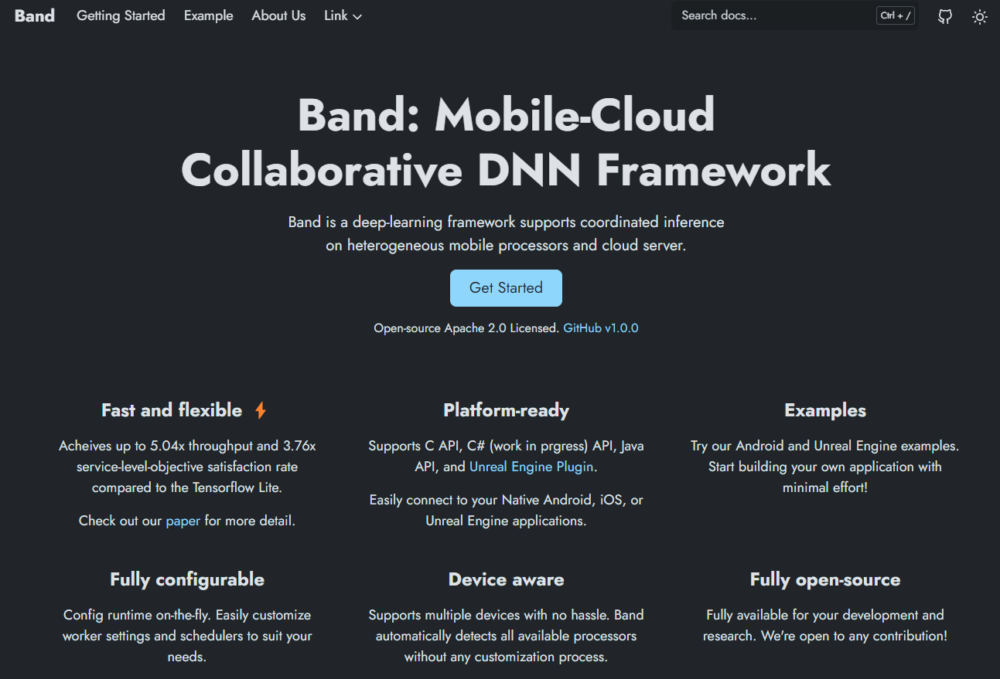
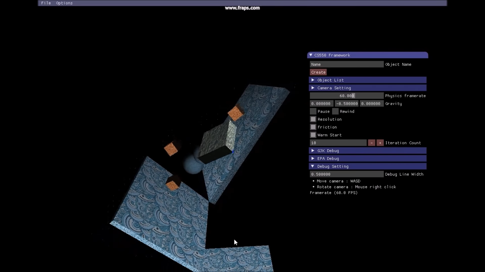
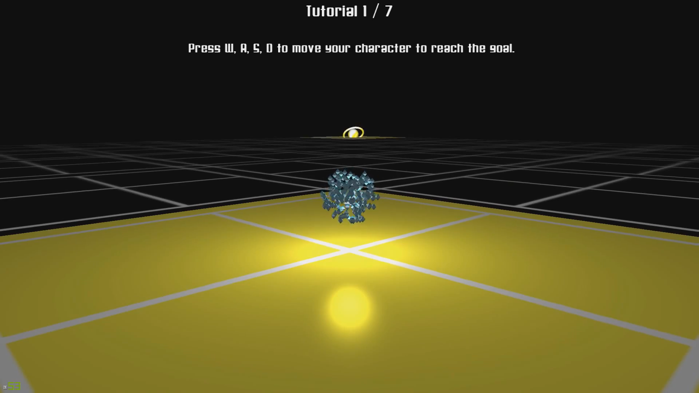

I am an experimental computer systems researcher at the Human-Centered Computer Systems Lab. I envision future applications unconstrained by existing technologies, and realize them by building the supporting systems that make those futures executable — spanning mobile on-device intelligence, mixed reality frameworks, and spatial telepresence across separate physical spaces. My trajectory here has not been linear: I started as a proud DigiPen Dragons, professional game developer working on Minecraft: Education Edition at Microsoft Studios, then turned to medical imaging and 3D vision researcher during my master's.
Most of computing pulls people into screens. My research asks the opposite — how spatial computing can extend computation into physical space, so that it augments rather than displaces our experience of the real world. Realizing this requires a new kind of software platform: one that moves beyond passively sensing or simulating space, toward systems that interact with users and actuate the environment itself. I see this as a bridge between computer systems and architecture — where built environments are no longer static backgrounds but dynamic structures, co-designed with the computational layer that inhabits them.
Outside of research, I'm an avid yogi who enjoys getting lost in the city and in nature.
2025
2024
Logan: Loss-tolerant Live Video Analytics System
Proceedings of the 31st Annual International Conference on Mobile Computing and Networking, 2024.
Maestro: The Analysis-Simulation Integrated Framework for Mixed Reality
Proceedings of the 22nd Annual International Conference on Mobile Systems, Applications and Services, 2024.
Poster: XRMan: Towards Real-time Hand-Object Pose Tracking in eXtended Reality
Proceedings of the 31st Annual International Conference on Mobile Computing and Networking, 2024.
2022
Band: Coordinated Multi-DNN Inference on Heterogeneous Mobile Processors
Proceedings of the 20th Annual International Conference on Mobile Systems, Applications and Services, 2022.
2021
Liver Segmentation in Abdominal CT Images via Auto-Context Neural Network and Self-Supervised Contour Attention
Artificial Intelligence in Medicine, 2021.
ParallelFusion: Towards Maximum Utilization of Mobile GPU for DNN Inference
Proceedings of the 5th International Workshop on Embedded and Mobile Deep Learning (in conjunction with MobiSys), 2021.
2020
Automatic Registration Between Dental Cone-Beam CT and Scanned Surface via Deep Pose Regression Neural Networks and Clustered Similarities
IEEE Transactions on Medical Imaging, 2020.
Deeply Self-Supervised Contour Embedded Neural Network Applied to Liver Segmentation
Computer Methods and Programs in Biomedicine, 2020.
Pose-Aware Instance Segmentation Framework from Cone Beam CT Images for Tooth Segmentation
Computers in Biology and Medicine, 2020.
Projects



Rigidbody Constraint-based Physics Simulation
Project Leader (Solo Project)
Rigidbody constraint-based physics simulation built from scratch using C++

Education
Ph.D. in Computer Science and Engineering
Seoul National University, Seoul, Republic of Korea
M.S. in Computer Science and Engineering
Seoul National University, Seoul, Republic of Korea
B.S. in Computer Science in Real-Time Interactive Simulation
DigiPen Institute of Technology, Redmond, Washington, USA
Experience
Research Intern, Microsoft Research Asia
Heterogeneous and Extreme Computing (HEX) group, Beijing, China (Virtual)
Software Engineer, Microsoft
Minecraft Education Edition team, Redmond, Washington, USA
· Developed companion apps (Classroom Mode & Code Connection)
· Developed visual programming experiences for K-12 students
(Hour of Code - Minecraft Designer and Code Builder extensions for Scratch X)